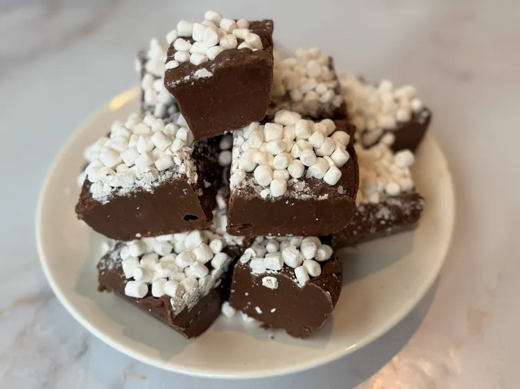

Hot Cocoa Fudge

Description
This hot cocoa fudge is so rich, delicious, and creamy; the marshmallow bits will make you think of a cup of cocoa. With only 6 ingredients, you'll impress with very little effort.
Ingredients
- 4 packets hot cocoa mix
- 3 tablespoons salted butter
- 1 (14 ounce) can sweetened condensed milk
- 1 cup milk chocolate chips
- 1 1/2 cups semisweet chocolate chips
- 1 teaspoon vanilla bean paste or vanilla extract
- 1 cup marshmallow bits, or 1 to 2 cups mini marshmallows
Steps
- Line an 8x8-inch baking dish with parchment paper; spray paper with cooking spray.
- Stir hot chocolate packets and butter together in a saucepan over low heat. Add sweetened condensed milk, whisk until smooth.
- Stir in milk chocolate chips and semisweet chocolate chips; heat gently and stir just until melted and smooth. Remove from heat; stir in vanilla.
- Pour fudge into prepared baking dish and smooth the top. Sprinkle marshmallows over fudge and gently press in. Refrigerate for 4 hours or overnight.
- Remove fudge from pan; cut into squares.
Home